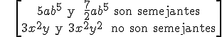

Monomios
Un monomio es la expresión algebraica más simple; está formado por el producto de números y letras o variables (con potencias) .
Tiene dos partes: la parte numérica llamada coeficiente, y la de las variables llamada parte literal.
Ejemplos:
-4x (-4 es el coeficiente y x es la parte literal)
3xy2z5 (3 es el coeficiente y xy2z5 es la parte literal)
4x/y no es un monomio
El grado de una variable es el exponente de su potencia y el grado de un monomio es la suma de los grados de sus variables.
Ejemplos: 4x tiene grado 1 y 3xy2z5 tiene grado 8.
Dos monomios se dice que son semejantes si tienen la misma parte literal.
Ejemplos:

\[\begin{align} & 5a{{b}^{5}}\text{ y }\frac{\text{7}}{\text{2}}a{{b}^{5}}\text{ son semejantes} \\ & 3{{x}^{2}}y\text{ y }3{{x}^{2}}{{y}^{2}}\text{ no son semejantes} \\ \end{align}\]
Ejercicio. Decide si las siguientes expresiones son monomios o no y, si lo son encuentra su coeficiente, su parte literal y grado:
a) -3xy3z9
b) πa7b9c
c) 3x + y
d) 17x/y
e) 4a11b3c2d
Soluciones: a) coeficiente: -3, parte literal: xy3z9; grado: 13; b) coef.: π, p. lit..: a7b9c, grado: 17; c) no es un monomio; d) no es un monomio;
e) coef.: 4, parte literal.: a11b3c2d , grado: 17
Obra publicada con Licencia Creative Commons Reconocimiento No comercial Compartir igual 4.0